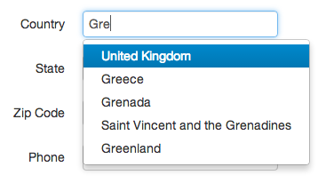

1 Introduction - Reference Documentation
Authors: Matouš Kučera
Version: 1.0
1 Introduction
This plugin provides advanced country selector for Grails. It is suitable for all forms where the user needs to put a country, i.e. address form. Contrary to traditional html select with a huge list of countries, it serves a user normal input box where the user can type his country. When he starts typing it suggest him possible countries he could fill in.It uses JavaScript autocomplete to give the user right help. The autocomplete takes into account country name alternatives and different relevance for different countries (see Countries i18n chapter). Moreover, it allows i18n localization of country names, alternatives and also relevancy.The plugin is based on JavaScript implementation of country selector of Baymard Institute, see project on Github.Example of rendered country selector: 1.1 Change Log
| Date | Version | Notes |
|---|---|---|
| 2013-11-13 | 1.0 | Release of 1.0. TagLib for display of country name based on its code. Locale attribute for tagLibs. |
| 2013-07-03 | 0.2.6 | Improved dependencies. Resource plugin is not required by default. |
| 2013-07-02 | 0.2 | Bug fixes. German translation. |
| 2013-07-01 | 0.1 | Smart country selector - <cs:countrySelector /> tag. jQuery autocomplete implementation. Twitter Bootstrap autocomplete implementation. Country setup in i18n. |
1.2 Roadmap
- Cashing of parsed i18n country codes
- Translations to CZ